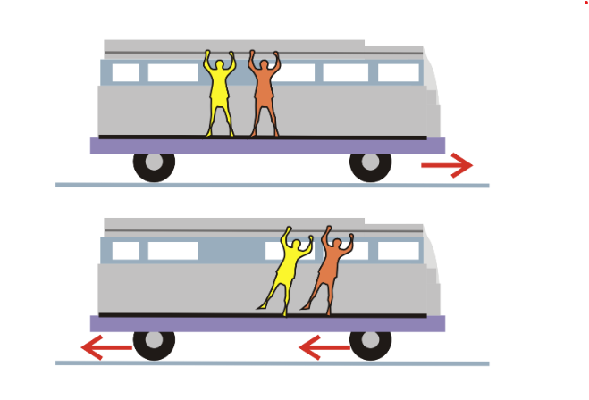
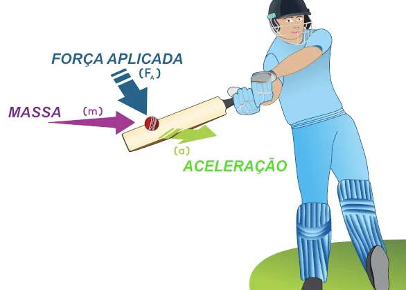
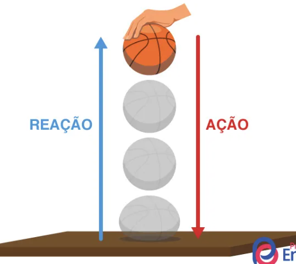

As Leis de Newton
Isaac Newton formulou três leis fundamentais que descrevem o movimento dos corpos e suas interações. Vamos conhecê-las:
Primeira Lei de Newton: Lei da Inércia
"Um corpo em repouso tende a permanecer em repouso e um corpo em movimento tende a permanecer em movimento em linha reta com velocidade constante, a menos que uma força resultante externa atue sobre ele."
Isso significa que os objetos resistem a mudanças em seu estado de movimento. Esta propriedade é chamada de inércia.
Segunda Lei de Newton: Lei da Força
"A força resultante que age sobre um corpo é proporcional ao produto da massa pela aceleração que adquire."
Matematicamente, isso é expresso como F = m × a, onde F é a força resultante, m é a massa do corpo e a é a aceleração.
Terceira Lei de Newton: Lei da Ação e Reação
"Para toda ação há sempre uma reação igual e oposta."
Quando um corpo exerce uma força sobre outro corpo, este segundo corpo exerce uma força igual e oposta sobre o primeiro.
Teste Seus Conhecimentos
Primeira Lei de Newton
1. Quando você está em um carro em movimento e o motorista freia bruscamente, você tende a ser jogado para frente. Isso ocorre devido à inércia?
2. Um livro em repouso sobre uma mesa permanecerá em repouso indefinidamente se nenhuma força externa atuar sobre ele. Isso é uma aplicação da Lei da Inércia?
3. Uma bola de futebol em movimento continuará se movendo eternamente, mesmo após tocar o chão, se não houver atrito ou outras forças externas?
Segunda Lei de Newton
4. Se você aplicar a mesma força a dois objetos, sendo um mais pesado que o outro, o objeto mais pesado terá menor aceleração?
5. A fórmula F = m × a significa que quanto maior a massa de um corpo, maior será a força necessária para produzir a mesma aceleração?
6. Um foguete acelera no espaço quando seus motores expelem gases. Isso ocorre porque a aceleração depende apenas da força aplicada, independente da massa?
Terceira Lei de Newton
7. Quando você pula, você exerce uma força sobre o chão e o chão exerce uma força igual e oposta sobre você, permitindo que você se eleve?
8. Quando um martelo bate em um prego, o prego exerce uma força sobre o martelo com a mesma intensidade, mas em sentido oposto?
9. Um barco pode se mover porque os remos empurram a água para trás, e a água empurra o barco para frente com a mesma força?